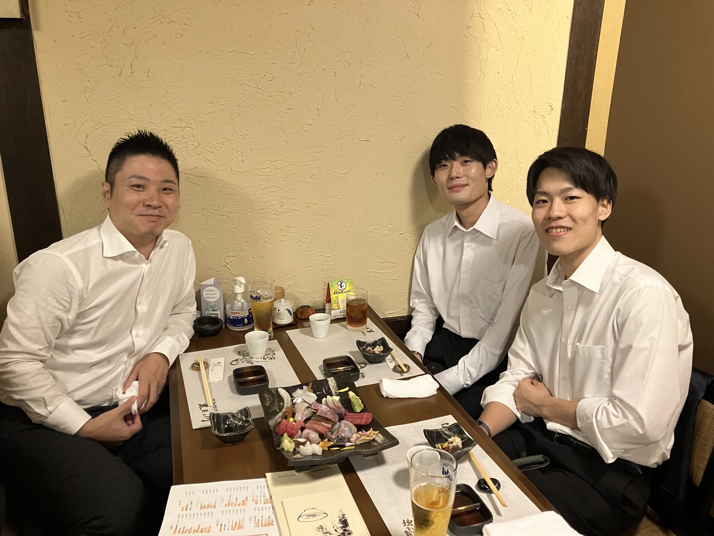
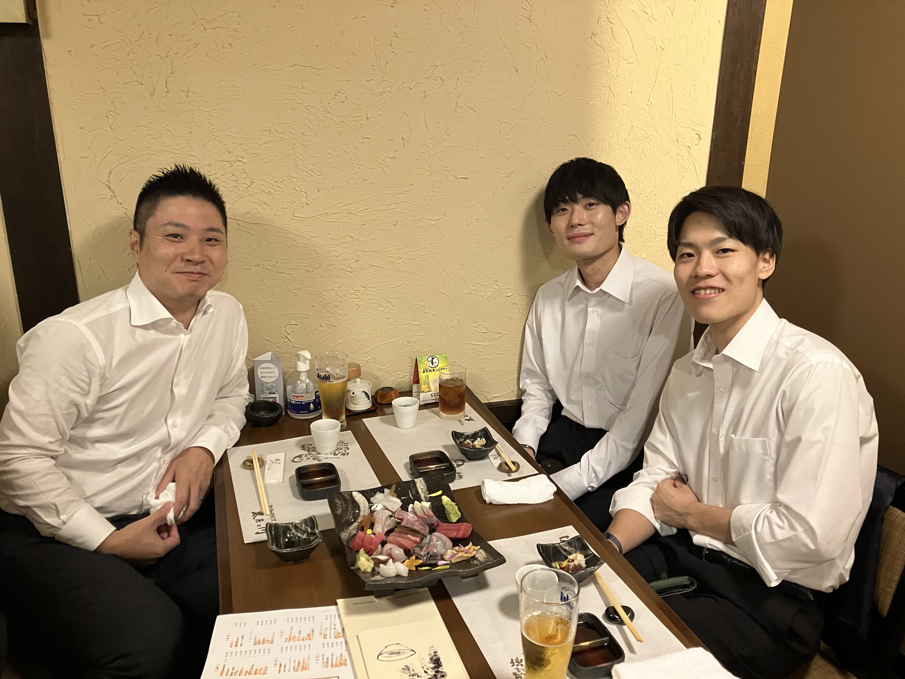

理論・実験と並ぶ理工学における問題解決の強力な手法である計算力学手法と, これを駆使した先進的機械構造物の数理最適設計法について研究しています. 問題の数理構造を的確に捉えた高度な技術により, システムデザイン工学の新潮流を開拓することを目指します.
We focus on realising novel computational method which is a powerful tool for solving problems in various fields in science and engineering along with theoretical and experimental methodologies, and mathematical optimal design method for emerging mechanical structures. We will pioneer a new trend in system design engineering by the advanced technologies that accurately capture the mathematical structure of underlying problems.

 
